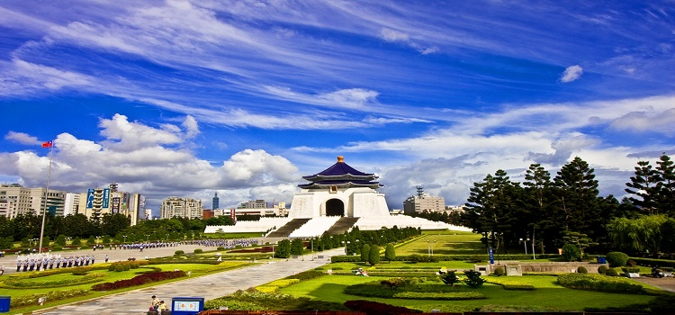

台北两日经典游
第一天：中正纪念堂>鼎泰丰信义店>永康街商圈>四四南村>台北101>信义商圈
第二天：龙山寺>青草巷>剥皮寮老街>北门>迪化街>霞海城隍庙>宁夏夜市
第一天景点：
#中正纪念堂#
占地24.79公顷的中正纪念堂位于台北市中心，是为追念先总统蒋公而建造的纪念堂，造型仿北平天坛之顶、埃及金字塔之体，高耸威严。
地址：台北市中正区中山南路21号

图：中正纪念堂
#鼎泰丰信义店#
超级热门的台湾当地美食，在台湾它已成为中华传统美食的代表。很多国内外游客到台湾必到鼎泰丰，只为一尝小笼包的美味。
地址：台北市大安区信义路二段194号
#永康街商圈#
永康街是以永康公园为中心，涵盖永康街、丽水街、部分的金华桥，以及街口附近的信义路商店为主的商圈。商圈原先聚集了许多台湾小吃与餐厅，后来亦渐渐开设了不少异国美食餐厅、许多风格独具的咖啡馆，以及一些精品小店。
地址：台湾台北市大安区信义路二段

图：永康街商圈
#四四南村#
四四南村，为1948年国民党军队迁台后兴建的眷村之一，位于台北最热闹的信义计划区，隔两条街便是台北101和世贸中心。
地址：台湾台北市信义区松勤街50号
图：四四南村
#台北101#
是台湾首座顶级国际购物中心，标高382公尺的89楼观景台，拥有全方位绝佳的观景视野，鸟瞰大台北美景。
地址：台北市信义区信义路5段7号
图：台北101购物中心
#信义商圈#
新兴商业区，乃目前台北市最具指标性的商圈。
位置：台北市信义区
图：信义商圈
第二天景点
#龙山寺#
龙山寺总面积一千八百馀坪，坐北朝南，面呈日字形，每到民俗节庆都有盛大花灯、庙今引未汹涌人潮，周边的常规风味市街，具有民俗气息。
地址：台北市广州街211号
图：龙山寺
#青草巷#
位在龙山寺右侧，巷内是一条青草药专卖店，一走进青草巷，浓浓的草药香气扑面而来，五十米长的窄巷几乎都是百年老店。
地址：台北市西昌路224巷
#剥皮寮老街#
剥皮寮街道长三四百米，宽约3米，蜿蜒两侧的多是一二层高的砖木结构房屋，红砖映衬黑瓦和深褐的木门、木窗，闽南式骑廊，显得古意盎然。
地址：台北市万华区广州街、康定路及昆明街
#北门#
北门的设计属封闭的碉堡建筑，城座中央开有进出府城的城门孔道，为当时大稻埕进入台北的必经之路，是清代台北府城唯一被完整保留至今的城门遗迹。
地址：台北市忠孝西路、博爱路、延平南北路交会处
图：北门
#迪化街#
光复后迪化街持续作南北货、中药和布匹批发商集中地，至今仍是这三大行业中最大的批发零售市场，是台北市现存最完整也最具历史意义的老街。
地址：台北市大同区迪化街一段
图：迪化街
#霞海城隍庙#
霞海城隍庙坐东北朝西南，依淡水河的走向而建，为单进单开间前带卷棚拜殿及左偏殿的庙宇建筑，城隍是中国宗教文化中普遍崇祀的重要神祇之一，由有功于地方民众的名臣英雄充当，是中国民间和道教信奉守护城池之神。
地址：台北市迪化街
#宁夏夜市#
宁夏夜市是台北少数将摊贩集中在道路中间的夜市，长约 400 公尺，汇聚许多传统台湾小吃。
地址：台北民生西路至南京西路段
台北三日经典游
第一天：中正纪念堂>士林官邸>台北故宫博物院>张大千先生纪念馆>士林夜市
第二天：总统府>二二八和平公园>国父纪念馆>松山文创园区>台北101
第三天：台北植物园>南门市场>永康街商圈>迪化街>宁夏夜市
第一天景点
#中正纪念堂#
占地24.79公顷的中正纪念堂位于台北市中心，是为追念先总统蒋公而建造的纪念堂，造型仿北平天坛之顶、埃及金字塔之体，高耸威严。
地址：台北市中正区中山南路21号
图：中正纪念堂
#士林官邸#
在国民政府迁台后，1950年时，先总统蒋中正先生的官邸便设于此。经过46年的严密护卫，民主的潮流使士林官邸在1996年正式开放。
地址：台北市士林区福林路60号
图：士林官邸
#台北故宫博物院#
故宫收藏的文物珍宝，是举世闻名的文化资产，其收藏品的年代几乎囊括了整个中华文化五千余年未曾中断的历史，在世界文明史上独一无二。
地址：台北市士林区至善路二段221号
图：台北故宫博物馆
#张大千先生纪念馆#
张大千纪念馆建于1976年，1978年8月完工，占地1784平方米，以保留故居、重现张大千先生的生活起居环境为主，并且展示照片及各种奇石盆栽等。
地址：台北市士林区至善路2段342巷2号
#士林夜市#
士林夜市为台北市最具规模的夜市之一，以阳明戏院及慈诚宫为中心，包含了文林路、大东路、大南路等热闹街市。
地址：台北市士林区大东路、大南路、文林路、基河路
图：士林夜市
第二天景点
#总统府#
此栋建筑系日治时期「总督府」之所在，自1919年完工以来，便一直是中国台湾地区的最高权力中心所在。
地址：台北市中正区重庆南路一段122号
图：总统府
#二二八和平公园#
民国85年台北市政府为纪念发生在36年二二八事件改名为二二八和平公园，公园里保存有一些古迹，如日据时代电台播音塔、铜牛老火车头，以及急公好义坊和黄氏贞节坊等。
地址：台北市中正区凯达格兰大道3号
图：二二八和平公园
#国父纪念馆#
占地35000坪，为宫殿式建筑。馆外有中山公园环绕，馆内有四大展览室，装饰精美，设计新颖，展示中华民国建国史及现代名家艺术品。
地址：台湾省台北市信义区仁爱路四段505号
#松山文创园区#
园区中有各式文创商店、艺品店、餐饮等，供消费者尽情参观选购，而古老烟场中的巴洛克式庭园、生态水池，在繁华市区如同珍贵的绿洲，提供顾客幽静古雅的休闲环境。
地址：台北市信义区光复南路133号
图：松山文化创意园，
#台北101#
是台湾首座顶级国际购物中心，标高382公尺的89楼观景台，拥有全方位绝佳的观景视野，鸟瞰大台北美景。
地址：台北市信义区信义路5段7号
图：台北101购物中心
第三天景点
#台北植物园#
植物园占地约8.6公顷，绿荫密布，搜罗之植物多达1500种，园内有国家二级古迹布政使司衙门和植物标本馆供民众参观。
地址：台北市中正区南海路53号
图：台北植物园
#南门市场#
从日据时代就是蔬果的集散中心，后来大批外省人居住在这一区，也就成了传统贩卖外省南北货，各省家乡小吃的地方。
地址：台北市罗斯福路一段8号
#永康街商圈#
永康街是以永康公园为中心，涵盖永康街、丽水街、部分的金华桥，以及街口附近的信义路商店为主的商圈。商圈原先聚集了许多台湾小吃与餐厅，后来亦渐渐开设了不少异国美食餐厅、许多风格独具的咖啡馆，以及一些精品小店。
地址：台湾台北市大安区信义路二段
图：永康街商圈
#迪化街#
光复后迪化街持续作南北货、中药和布匹批发商集中地，至今仍是这三大行业中最大的批发零售市场，是台北市现存最完整也最具历史意义的老街。
地址：台北市大同区迪化街一段
图：迪化街
#宁夏夜市#
宁夏夜市是台北少数将摊贩集中在道路中间的夜市，长约 400 公尺 ， 汇聚许多传统台湾小吃。
地址：台北民生西路至南京西路段
台北三日美食游
第一天：台北故宫博物院>花博公园>台北故事馆>北投温泉区
第二天： 总统府>中正纪念堂>南门市场>永康街商圈>松山慈佑宫>饶河街夜市
第三天：剥皮寮老街>艋舺清水岩祖师庙>西门町商圈>迪化街>宁夏夜市
第一天景点
#台北故宫博物院#
故宫收藏的文物珍宝，是举世闻名的文化资产，其收藏品的年代几乎囊括了整个中华文化五千余年未曾中断的历史，在世界文明史上独一无二。
地址：台北市士林区至善路二段221号
图：台北故宫博物馆
#花博公园#
主要展馆为提供多元会展之争艳馆、环保时尚之流行馆、适合亲子游憩中山亲子馆，及提供民众欣赏多元丰富艺术表演舞台之街头艺人乐园
地址：台北市中山区玉门街1号
图：花博公园
#台北故事馆#
台北故事馆是一栋英国都铎式洋楼的市定古迹。该二层楼建筑一楼为砖造，二楼则为原木结构，被称为“童话奶油屋”。
地址：台北市中山区中山北路三段181-1号
图：台北故事馆
#北投温泉区#
北投温泉位于台北市北投区，泛指地热谷、龙凤、凤凰、湖山里、行义路等十余处温泉。
地址：台北市北投区中山路光明路交岔口
图：北投温泉区
第二天景点：
#总统府#
此栋建筑系日治时期「总督府」之所在，自1919年完工以来，便一直是中国台湾地区的最高权力中心所在。
地址：台北市中正区重庆南路一段122号
图：总统府
#中正纪念堂#
占地24.79公顷的中正纪念堂位于台北市中心，是为追念先总统蒋公而建造的纪念堂，造型仿北平天坛之顶、埃及金字塔之体，高耸威严。
地址：台北市中正区中山南路21号
图：中正纪念堂
#南门市场#
从日据时代就是蔬果的集散中心，后来大批外省人居住在这一区，也就成了传统贩卖外省南北货，各省家乡小吃的地方。
地址：台北市罗斯福路一段8号
#永康街商圈#
永康街是以永康公园为中心，涵盖永康街、丽水街、部分的金华桥，以及街口附近的信义路商店为主的商圈。商圈原先聚集了许多台湾小吃与餐厅，后来亦渐渐开设了不少异国美食餐厅、许多风格独具的咖啡馆，以及一些精品小店。
图：永康街商圈
地址：台湾台北市大安区信义路二段
#松山慈佑宫#
慈佑宫在公元1753年建立，是松山地区发展的起源地。
地址：台北市松山区八德路四段761号
图：松山慈佑宫
#饶河街夜市#
饶河街夜市是台北市区的大型观光夜市之一，全长约六百公尺，位于抚远街与松山火车前的入口处，各设有一座灯火璀璨的牌楼，由牌楼处开始进入夜市区。
地址：松山区八德路四段及抚远街间
第三天景点
#剥皮寮老街#
剥皮寮街道长三四百米，宽约3米，蜿蜒两侧的多是一二层高的砖木结构房屋，红砖映衬黑瓦和深褐的木门、木窗，闽南式骑廊，显得古意盎然。
地址：台北市万华区广州街、康定路及昆明街
#艋舺清水岩祖师庙#
艋舺清水岩又称「祖师庙」，在清乾隆52年（公元1787年）建立。与艋舺龙山寺、大龙峒保安宫，并称「台北三大庙门」。
地址：台北市万华区康定路81号
图：艋舺清水岩祖师庙
#西门町商圈#
西门町的地名来自日治时代，当时的居民大多居住于台北城内，而西门区域就是他们的休憩场所，1896年，这里有了第一家戏院「东京亭」，1922年时，正式以「西门町」为名。
地址：台北市万华区中华路一段
图：西门町
#迪化街#
光复后迪化街持续作南北货、中药和布匹批发商集中地，至今仍是这三大行业中最大的批发零售市场，是台北市现存最完整也最具历史意义的老街。
地址：台北市大同区迪化街一段
#宁夏夜市#
宁夏夜市是台北少数将摊贩集中在道路中间的夜市，长约 400 公尺 ， 汇聚许多传统台湾小吃。
地址：台北市民生西路至南京西路段
台北四日深度游
第一天：台北故宫博物院>士林夜市
第二天：淡水红楼>淡水老街>淡水情人桥>淡水夜市 第三天：中正纪念堂> 华山特区>国父纪念馆>台北101 第四天：诚品书店敦南店>袖珍博物馆>西门町商圈
第一天景点
#台北故宫博物院#
故宫收藏的文物珍宝，是举世闻名的文化资产，其收藏品的年代几乎囊括了整个中华文化五千余年未曾中断的历史，在世界文明史上独一无二。
地址：台北市士林区至善路二段221号
图：台北故宫博物馆
#士林夜市#
士林夜市为台北市最具规模的夜市之一，以阳明戏院及慈诚宫为中心，包含了文林路、大东路、大南路等热闹街市。
地址：台北市士林区大东路、大南路、文林路、基河路
图：士林夜市
第二天景点
#淡水红楼#
淡水红楼建于1891年，是一栋两层楼的典型英国殖民地建筑式样洋房。
地址：新北市淡水区三民街2巷6号
图：淡水红楼
#淡水老街#
淡水老街是非常有台湾味道、且值得驻足的地方，街上店面林立，不论是怀旧或是现代店铺皆有，还有许多淡水著名的传统美食。
地址：新北市淡水区中正路65号
#淡水情人桥#
情人桥又名人行跨海大桥，是一座斥资7000万元（新台币）、总长约196米、平均宽5米、最高处达12米的跨港大桥，在桥上可欣赏著名的淡水夕阳景色。
地址：新北市淡水镇渔人码头
图：淡水情人桥
#淡水夜市#
海鲜是淡水夜市招徕食客的招牌，著名的海鲜有：海瓜子、文蛤、螃蟹炒蛋、软丝、白带鱼等，种类很多，其它淡水有名的小吃还有铁蛋、许义鱼酥、渡船头的鱼丸汤和肉包、榕园皂活鱼和菊花茶等。
地址：新北市淡水区中正路65号
图：淡水夜市
第三天景点
#中正纪念堂#
占地24.79公顷的中正纪念堂位于台北市中心，是为追念先总统蒋公而建造的纪念堂，造型仿北平天坛之顶、埃及金字塔之体，高耸威严。
地址：台北市中正区中山南路21号
图：中正纪念堂
#华山特区#
集创作设计、艺术表演、商业活动和休闲娱乐为一体的艺术文化场所。
地址：台北市100中正区八德路一段1号
#国父纪念馆#
占地35000坪，为宫殿式建筑。馆外有中山公园环绕，馆内有四大展览室，装饰精美，设计新颖，展示中华民国建国史及现代名家艺术品。
地址：台北市信义区仁爱路四段505号
图：国父纪念馆
#台北101#
是台湾首座顶级国际购物中心，标高382公尺的89楼观景台，拥有全方位绝佳的观景视野，鸟瞰大台北美景。
地址：台北市信义区信义路5段7号
图：台北101购物中心
第四天景点
#诚品书店敦南店#
融合了咖啡馆，文教店，特色伴手礼店跟手信店，是台北文化的代表元素之一。
地址：台北市大安区敦化南路一段245号2F
图：诚品书店
#袖珍博物馆#
袖珍博物馆是亚洲第一座专门收藏当代袖珍艺术品的博物馆，里面有200多件从世界各地搜集来的袖珍艺术品。
地址：台北市中山区建国北路一段96号B1
#西门町商圈#
西门町的地名来自日治时代，当时的居民大多居住于台北城内，而西门区域就是他们的休憩场所，1896年，这里有了第一家戏院「东京亭」，1922年时，正式以「西门町」为名。
地址：台北市万华区中华路一段
图：西门町
台北五日深度游
第一天：龙山寺>西门町商圈>总统府>永康街商圈>台北101大楼
第二天：中正纪念堂>士林官邸>台北故宫博物院>宁夏夜市
第三天：忠孝东路Sogo百货商圈>国父纪念馆>松山文创园区>信义路商圈
第四天：台北市立动物园>猫空观景>公馆夜市
第五天：淡水红毛城>真理大学>渔人码头>淡水老街
第一天景点
#龙山寺#
龙山寺总面积一千八百馀坪，坐北朝南，面呈日字形，每到民俗节庆都有盛大花灯、庙今引未汹涌人潮，周边的常规风味市街，具有民俗气息。
地址：台北市广州街211号
图：龙山寺
#西门町商圈#
西门町的地名来自日治时代，当时的居民大多居住于台北城内，而西门区域就是他们的休憩场所，1896年，这里有了第一家戏院「东京亭」，1922年时，正式以「西门町」为名。
地址：台北市万华区中华路一段
图：西门町
#总统府#
此栋建筑系日治时期「总督府」之所在，自1919年完工以来，便一直是中国台湾地区的最高权力中心所在。
地址：台北市中正区重庆南路一段122号
图：总统府
#永康街商圈#
永康街是以永康公园为中心，涵盖永康街、丽水街、部分的金华桥，以及街口附近的信义路商店为主的商圈。商圈原先聚集了许多台湾小吃与餐厅，后来亦渐渐开设了不少异国美食餐厅、许多风格独具的咖啡馆，以及一些精品小店。
地址：台湾台北市大安区信义路二段
#台北101#
是台湾首座顶级国际购物中心，标高382公尺的89楼观景台，拥有全方位绝佳的观景视野，鸟瞰大台北美景。
地址：台北市信义区信义路5段7号
图：台北101购物中心
第二天景点
#中正纪念堂#
占地24.79公顷的中正纪念堂位于台北市中心，是为追念先总统蒋公而建造的纪念堂，造型仿北平天坛之顶、埃及金字塔之体，高耸威严。
地址：台北市中正区中山南路21号
图：中正纪念堂
#士林官邸#
在国民政府迁台后，1950年时，先总统蒋中正先生的官邸便设于此。经过46年的严密护卫，民主的潮流使士林官邸在1996年正式开放。
地址：台北市士林区福林路60号
图：士林官邸
#台北故宫博物院#
故宫收藏的文物珍宝，是举世闻名的文化资产，其收藏品的年代几乎囊括了整个中华文化五千余年未曾中断的历史，在世界文明史上独一无二。
地址：台北市士林区至善路二段221号
图：台北故宫博物馆
#宁夏夜市#
宁夏夜市是台北少数将摊贩集中在道路中间的夜市，长约 400 公尺 ， 汇聚许多传统台湾小吃。
地址：台北市民生西路至南京西路段
第三天景点
#忠孝东路Sogo百货商圈#
经营哲学奠基于『顾客第一』的理念，适合逛街购物。
地址：台北市士林区中山北路六段77号
#国父纪念馆#
占地35000坪，为宫殿式建筑。馆外有中山公园环绕，馆内有四大展览室，装饰精美，设计新颖，展示中华民国建国史及现代名家艺术品。
地址：台北市信义区仁爱路四段505号
图：国父纪念馆
#松山文创园区#
园区中有各式文创商店、艺品店、餐饮等，供消费者尽情参观选购，而古老烟场中的巴洛克式庭园、生态水池，在繁华市区如同珍贵的绿洲，提供顾客幽静古雅的休闲环境。
地址：台北市信义区光复南路133号
图：松山文化创意园
#信义商圈#
新兴商业区，乃目前台北市最具指标性的商圈
位置：台北市信义区
图：信义商圈
第四天景点
#台北市立动物园#
园区总面积165公顷，园内的设计，充分利用该地形，维护景观及自然生态。
地址：台北市文山区新光路二段30号
图：台北市立动物园
#猫空观景#
猫空原本是茶区东侧的小溪谷，因地质松软，河床在长年冲击下被卵石钻蚀坑坑洼洞，水流则似猫爪痕迹，“猫空（孔）”之名就此传开来，来猫空喝茶观景已经成为台北独特的文化。
位置：台湾台北市文山区
图：猫空缆车
#公馆夜市#
公馆夜市由于靠近大学校区，是台大学生的乐园，区内吃喝玩乐样样都有，是寻找特殊且平价商品一定不能错过的夜市。
地址：台北市中正区大罗斯福路四段
第五天景点
#淡水红毛城#
红毛城不但是台湾现存最古老的建筑之一，同时也是台湾当局所颁订的一级古迹。
地址：新北市淡水区文化里中正路二十八巷1号
图：淡水红毛城
#真理大学#
真理大学是一所台湾基督长老教会在台湾北部创办的私立大学。
地址：新北市淡水区真理街32号
图：真理大学
#渔人码头#
淡水渔人码头东连大屯山脉、西隔淡水河与观音山相峙，闻名遐迩的 “淡江夕照” 于此可以一览无余，是台湾淡水的八大景之一。
地址：台北市淡水区淡水河出海口右岸
图：渔人码头
#淡水老街#
淡水老街是非常有台湾味道、且值得驻足的地方，街上店面林立，不论是怀旧或是现代店铺皆有，还有许多淡水著名的传统美食。
地址：新北市淡水区中正路65号